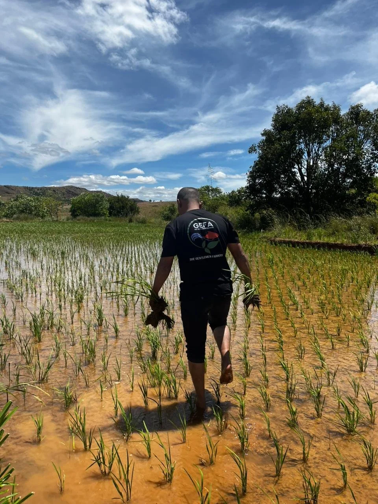

Reduce competition
Seed singly and space widely — for example in a grid of 25 cm × 25 cm — so each plant has room to thrive.
That is the SRI paradox. SRI-2030 works with governments — mainly in Africa — to scale the System of Rice Intensification, improving yields and farmer incomes while cutting water use and emissions.

The System of Rice Intensification is a way of cultivating rice that applies four simple principles to achieve remarkable results.
Seed singly and space widely — for example in a grid of 25 cm × 25 cm — so each plant has room to thrive.
Transplant young seedlings carefully, or direct-drill the seed, to give the new crop the strongest possible start.
Keep soils moist rather than inundated — for example through alternate wetting and drying — saving water and cutting methane.
Use organic manures where feasible; avoid tillage; maintain cover crops; and intercrop with legumes to fix nitrogen and provide other foods.
The net effect is an improved rice yield and better returns for farmers — with less water and energy consumption, and lower emissions. A boon for food sovereignty, rural livelihoods, the rice value chain, and the environment.
Three principles underpin our strategy.
As a continent, Africa imports $7.5 billion of rice a year [FAOSTAT, 2023] — when it could be self-sufficient. SRI is helping to close that gap without increasing water consumption, land under cultivation, or emissions. Above all, it is a way for smallholders to enjoy lower input costs and higher returns, while building resilience to increasingly difficult weather.
We work with governments, mainly in Africa, who are seeking to increase rice production without compromising on other priorities — and strategically and selectively with local partners who share our mission of transformation at national scale, including private sector milling businesses and local and international organisations.
We ask not “what do we need?” but “what can we do now with what we have available now?” The essence of breakthrough is recognising that it is not the important things in life that get done — just the urgent ones. The mission is scale, but the key is to get started now. That applies to everyone from the farmer to the head of state.
SRI is a versatile method built on core principles that farmers and trainers adapt into local, on-the-ground practices. While this flexibility is one of SRI’s greatest strengths, it also creates the risk that the methodology is misinterpreted as it spreads through training networks.
To avoid this — and to formally recognise the trainers helping farmers — SRI-2030 offers SRI certification: a free programme open to any extension agent who has been trained in SRI and can demonstrate both knowledge of the method and the ability to teach it effectively.
The scheme combines a theoretical component (online assessments covering SRI principles and practices) with a practical component (training farmers in SRI and evidencing their successful implementation through Kobo Toolbox). Certified trainers are added to SRI-2030’s trainer database.
If you have run an SRI training event and would like your extension agents to be certified, get in touch at certification@sri-2030.org.
Demonstrate core knowledge of SRI principles and practices through online assessment.
Train farmers in SRI and evidence their successful implementation in the field.
Meet higher requirements for knowledge and a growing record of verified farmer training.
The highest level of certification — recognising deep expertise and an extensive, verified training record.
More rice, grown on the same land, with less seed, less water and lower emissions — by farmers earning better returns.
Meet the people behind SRI-2030